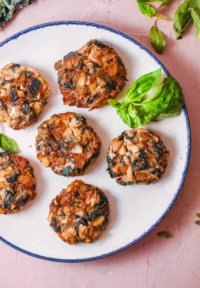

Mashed Potato Fritters

Ingredients
- 8 cups water
- 1 huge bunch kale (trimmed (about 6-10oz)
- 5 small red potatoes (cubed)
- 3/4 teaspoon salt (divided)
- 1 tablespoon extra virgin olive oil
- 3 cups diced yellow onion
- 2 tablespoons chopped fresh sage
- 1/4 cup sliced green onions
- 1/4 teaspoon ground black pepper
- olive oil cooking spray
- Sage sprigs (optional)
- Parmesean cheese (optional)
- Ketchup (optional)
Steps
- Bring water to a boil in a Dutch oven; add kale. Cover and cook over medium heat 5 minutes or until tender. While the kale is cooking, chop the rest of your veggies. Remove kale with a slotted spoon, reserving cooking liquid. Chop kale and set aside.
- Add potato to reserved cooking liquid in pan; bring to a boil. Reduce heat, and simmer 10 minutes or until tender. Drain; partially mash potatoes. Stir in kale and 1/4 teaspoon salt.
- Preheat oven to 400°. Heat oil in a large nonstick skillet over medium-high heat. Add 1/2 teaspoon salt, diced onion, and chopped sage. Cook 13 minutes or until browned.
- Combine potato mixture, onion mixture, green onions, and pepper in the pan. Remove from heat; cool slightly.
- Divide potato mixture into 8 equal portions, shaping each into a 1/2-inch-thick patty. Place patties on a baking sheet coated with cooking spray.
- Bake at 400° for 20 minutes. Then broil patties for 5 minutes or until browned.
- You can serve the patties as is, or top them with 1 Tbsp fresh grated parmesan, or serve them with ketchup, or just garnish them with sage sprigs: you can really do anything you like with them!
Recipe by Anjali Shah · The Picky Eater, from The Picky Eater. Saved here for personal use; the original has the full notes, tips and photos. Open original